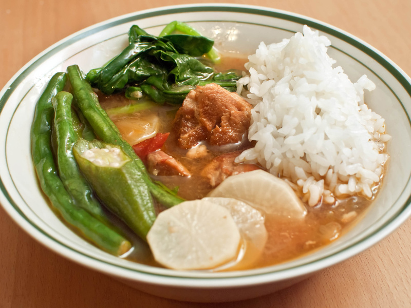

Sinigang na Baboy

Description:
Sinigang is a versatile dish. Pork (baboy), beef (baka), fish (isda),
chicken (manok) and shrimp (hipon) can all find their way into the pot.
Likewise, most any vegetable you have on hand can be added to the mix.
Water spinach, long beans, eggplant and okra are very common.
To be honest, most Filipino cooks nowadays use prepackaged sinigang soup
mix. But if you want to make it like Lola did (that's "Grandma"), then we
have the recipe for you
Ingredients
- Pork shoulder, cubed -- 2 1/2 to 3 pounds
- Tomatoes, seeded and chopped -- 3 or 4
- Onions, chopped - 1 or 2
- Garlic, chopped -- 3 or 4 cloves
- Fish sauce (patis) -- 1 cup
- Water -- 8 cups
- Tamarind paste -- 1/2 cup
- Boiling water -- 1 cup
- Green chile peppers -- 3 or 4
- Vegetables (see variations) -- about 4 cups
- Salt and pepper -- to taste
Steps
-
Add the pork, tomatoes, onions, garlic and fish sauce to a large pot.
Place the pot over medium-high flame and bring to a boil. Reduce heat to
medium and cook for about 10 minutes to reduce the liquid a bit. (You
may want to open a window. Fish sauce does have a smell.)
-
Add the water and bring back to a boil over medium-high heat. Skim off
any scum that rises to the surface, and then reduce heat to low, cover
and simmer until the pork is tender, an hour to an hour and a half.
-
Place the tamarind paste into a heat-proof bowl and pour the boiling
water over it. Let set for 5 to 10 minutes, then mash the pulp with
clean fingers to mix the tamarind and water well. Strain through a sieve
and discard the fibers and seeds.
-
Stir the tamarind water into the simmering pot, cover again and simmer
for about 10 minutes.
-
Add your desired vegetables to the pot and press them down into the
simmering liquid. Cover and simmer until the vegetables are cooked
through but still firm, another 10 to 20 minutes.
- Serve hot in bowls accompanied by steamed rice.
Go back home?